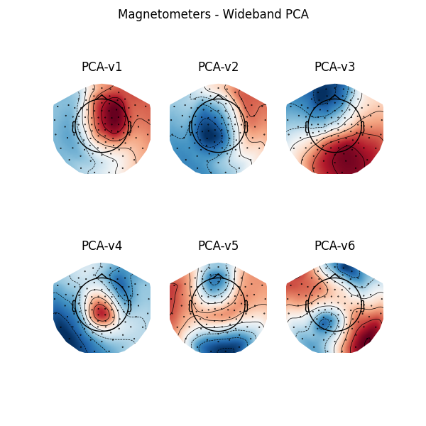
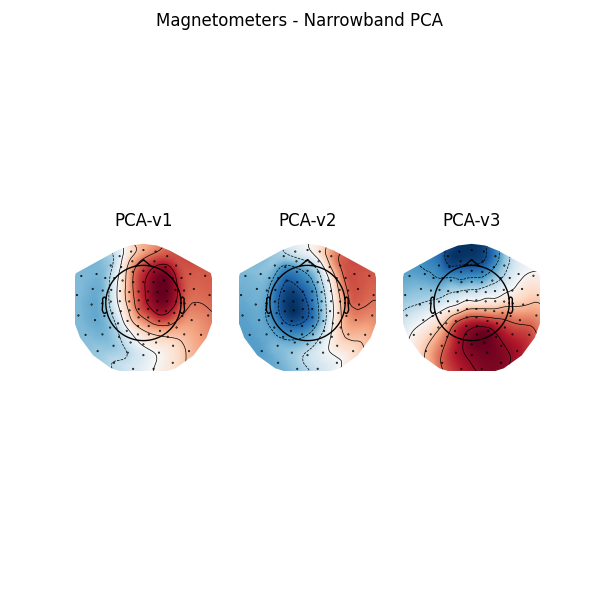
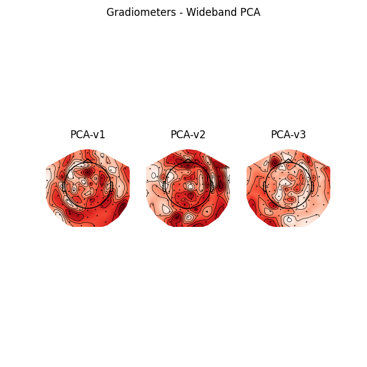
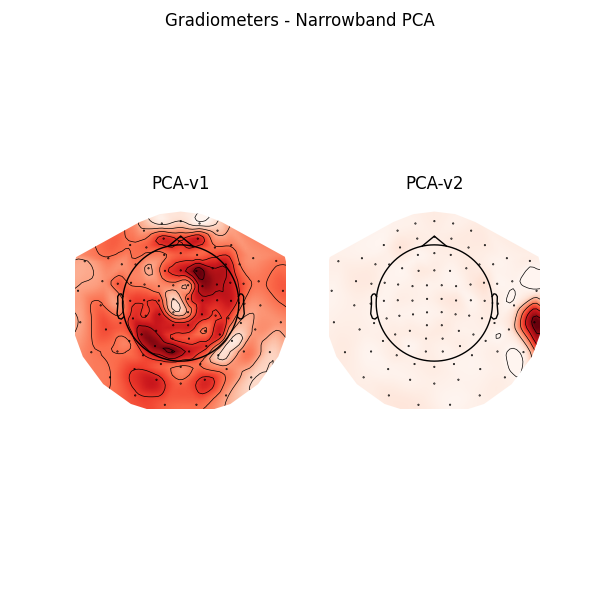

Note
Go to the end to download the full example code.
Create Signal Space Projectors🔗
Important
This example requires the meg_wiki package to download the sample dataset. This
package can be installed with pip:
$ pip install git+https://github.com/fcbg-platforms/meg-wiki
Background on projection🔗
Signal-Space Projection (SSP)[1] is a way of estimating a projection matrix to remove noise from a recording by comparing measurements with and without the signal of interest. An empty-room recording is typically used to estimate the direction(s) of environmental noise in sensor space. Once the noise vector(s) are known, you can create an orthogonal hyperplane and construct a projection matrix to project your recording onto that hyperplane. It should be clear that SSP reduces the dimensionality of your data and thus sensors will not retain linear independency.
Additional information on projections and on Signal-Space Projection (SSP) can be found in MNE’s background on projectors and projections.
MNE’s Python geometric example projecting from 3-dimensional space to the (x, y) plane:
import numpy as np
from matplotlib import pyplot as plt
ax = plt.axes(projection="3d")
ax.view_init(azim=-105, elev=20)
ax.set(xlabel="x", ylabel="y", zlabel="z", xlim=(-1, 5), ylim=(-1, 5), zlim=(0, 5))
# plot the vector (3, 2, 5)
origin = np.zeros((3, 1))
point = np.array([[3, 2, 5]]).T
vector = np.hstack([origin, point])
ax.plot(*vector, color="k")
ax.plot(*point, color="k", marker="o")
# project the vector onto the x,y plane and plot it
xy_projection_matrix = np.array([[1, 0, 0], [0, 1, 0], [0, 0, 0]])
projected_point = xy_projection_matrix @ point
projected_vector = xy_projection_matrix @ vector
ax.plot(*projected_vector, color="C0")
ax.plot(*projected_point, color="C0", marker="o")
# add dashed arrow showing projection
arrow_coords = np.concatenate([point, projected_point - point]).flatten()
ax.quiver3D(
*arrow_coords,
length=0.96,
arrow_length_ratio=0.1,
color="C1",
linewidth=1,
linestyle="dashed",
)
plt.show()

Default projectors🔗
The default set of projectors is available on our GitHub. Those projectors were obtained by combining projectors from the wideband PCA and from the narrowband PCA (bandpass filter between 15 and 18 Hz). The narrowband PCA improves the correction of the 16.7 Hz artifact, typical from a 15 kV AC railway electrification system.
Let’s have a look at the projectors in 68° position when IAS is disabled.
from mne import read_proj
from meg_wiki.datasets import sample
projs = read_proj(sample.data_path() / "ssp" / "200123" / "ssp_68_200123_proj.fif")
Read a total of 14 projection items:
ssp_68_magn.fif : PCA-v1 (1 x 306) idle
ssp_68_magn.fif : PCA-v2 (1 x 306) idle
ssp_68_magn.fif : PCA-v3 (1 x 306) idle
ssp_68_magn.fif : PCA-v4 (1 x 306) idle
ssp_68_magn.fif : PCA-v5 (1 x 306) idle
ssp_68_magn.fif : PCA-v6 (1 x 306) idle
ssp_68_magn.fif : PCA-v1 (1 x 306) idle
ssp_68_magn.fif : PCA-v2 (1 x 306) idle
ssp_68_magn.fif : PCA-v3 (1 x 306) idle
ssp_68_grad.fif : PCA-v1 (1 x 306) idle
ssp_68_grad.fif : PCA-v2 (1 x 306) idle
ssp_68_grad.fif : PCA-v3 (1 x 306) idle
ssp_68_grad.fif : PCA-v1 (1 x 306) idle
ssp_68_grad.fif : PCA-v2 (1 x 306) idle
To visualize the projector as topographic maps, we need information about the sensors location and orientation. Those information are stored in every raw recording.
from mne.io import read_info
info = read_info(
sample.data_path() / "meas_info" / "measurement-info.fif", verbose=False
)
info
from matplotlib import pyplot as plt
f, ax = plt.subplots(2, 3, figsize=(6, 6))
for k, proj in enumerate(projs[0:6]):
proj.plot_topomap(info, axes=ax[k // 3, k % 3])
ax[k // 3, k % 3].set_title(f"PCA-v{k + 1}")
plt.suptitle("Magnetometers - Wideband PCA")
f, ax = plt.subplots(1, 3, figsize=(6, 6))
for k, proj in enumerate(projs[6:9]):
proj.plot_topomap(info, axes=ax[k])
ax[k].set_title(f"PCA-v{k + 1}")
plt.suptitle("Magnetometers - Narrowband PCA")
plt.show()
- 
- 
from matplotlib import pyplot as plt
f, ax = plt.subplots(1, 3, figsize=(6, 6))
for k, proj in enumerate(projs[9:12]):
proj.plot_topomap(info, axes=ax[k])
ax[k].set_title(f"PCA-v{k + 1}")
plt.suptitle("Gradiometers - Wideband PCA")
f, ax = plt.subplots(1, 2, figsize=(6, 6))
for k, proj in enumerate(projs[12:14]):
proj.plot_topomap(info, axes=ax[k])
ax[k].set_title(f"PCA-v{k + 1}")
plt.suptitle("Gradiometers - Narrowband PCA")
plt.show()
- 
- 
Empty room recording🔗
Projectors are determined from an empty-room recording. They are specific to a gantry
position (up-right 68°, up-right 60°, supine 0°) and to an
Internal Active Shielding (IAS) state (ON or OFF). The
empty-room recording loaded below was measured with the gantry in the 68° position and
with IAS disabled.
from mne.io import read_raw_fif
raw = read_raw_fif(
sample.data_path() / "empty-room" / "empty-room-raw.fif", verbose=False
)
raw.del_proj("all") # remove the default projectors
raw.info["bads"] = ["MEG1343"] # bad channel with flux jumps
Noise level🔗
The power spectral density can be used to visualize the noise level. See Khan and Cohen[2] and this MNE-Python example for additional information.
raw.compute_psd(verbose=False).plot(
average=True,
spatial_colors=False,
dB=False,
xscale="log",
picks="data",
exclude="bads",
)
plt.show()
Plotting power spectral density (dB=False).
References🔗
Total running time of the script: (0 minutes 19.636 seconds)
Estimated memory usage: 1040 MB